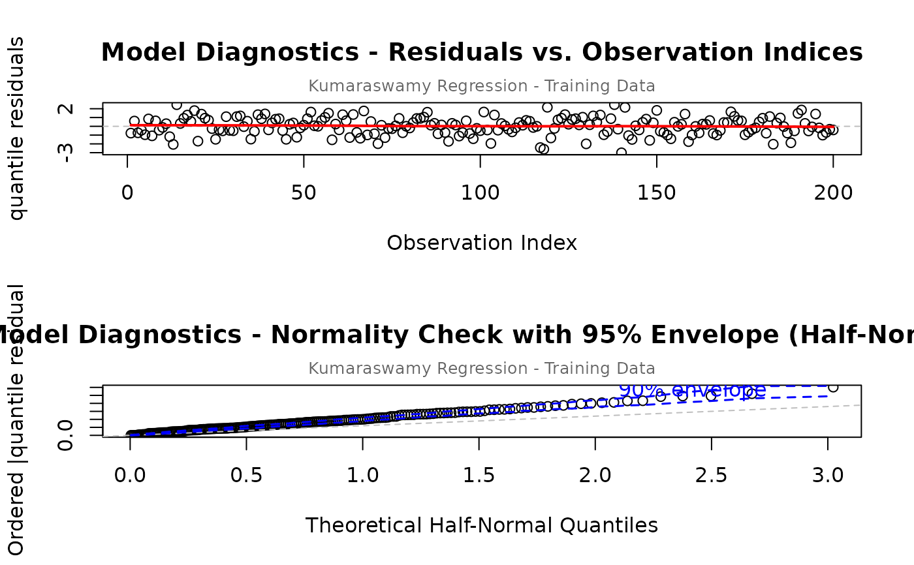
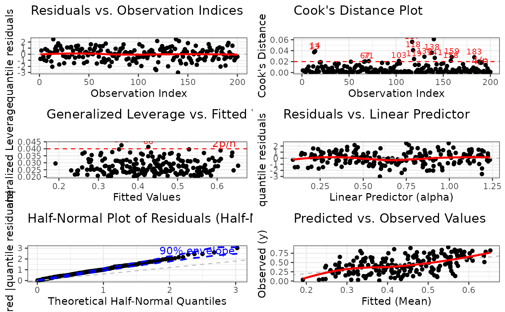
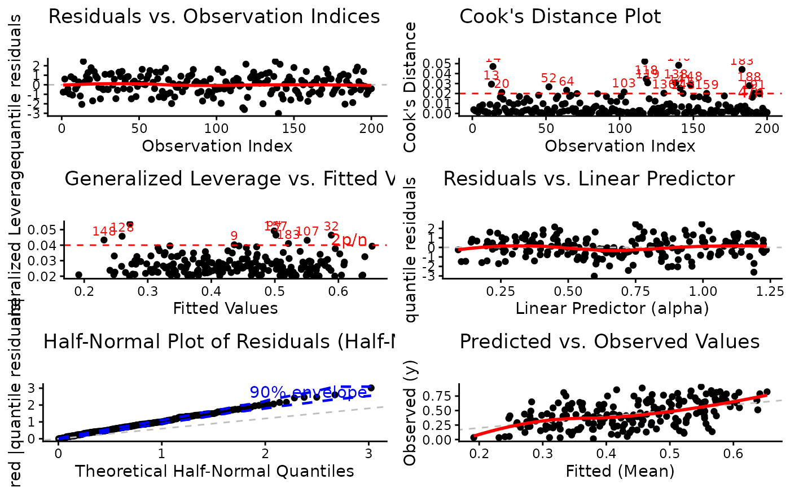
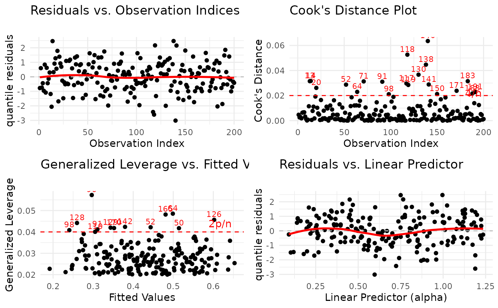
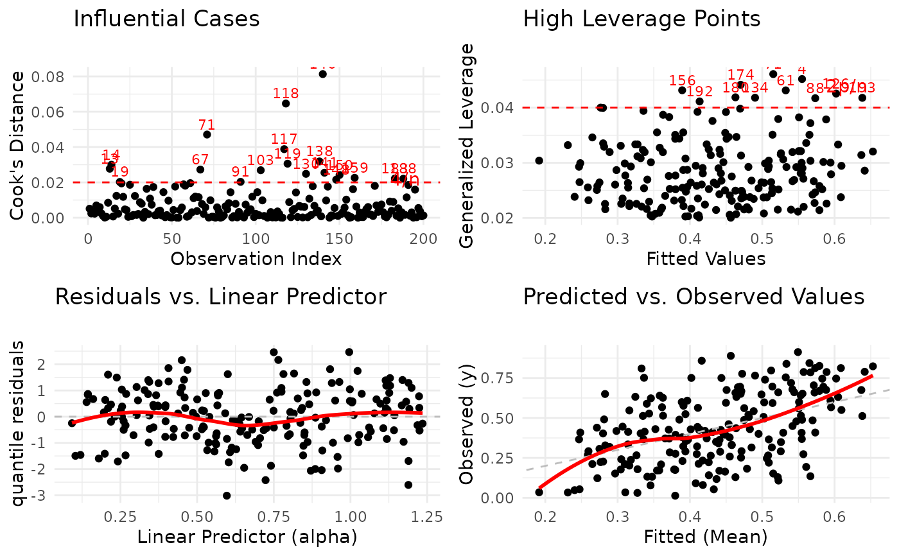
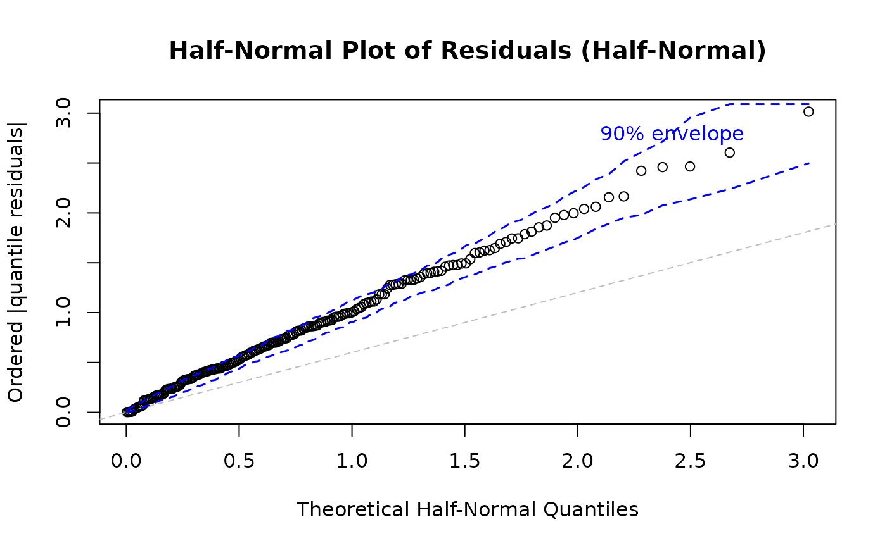
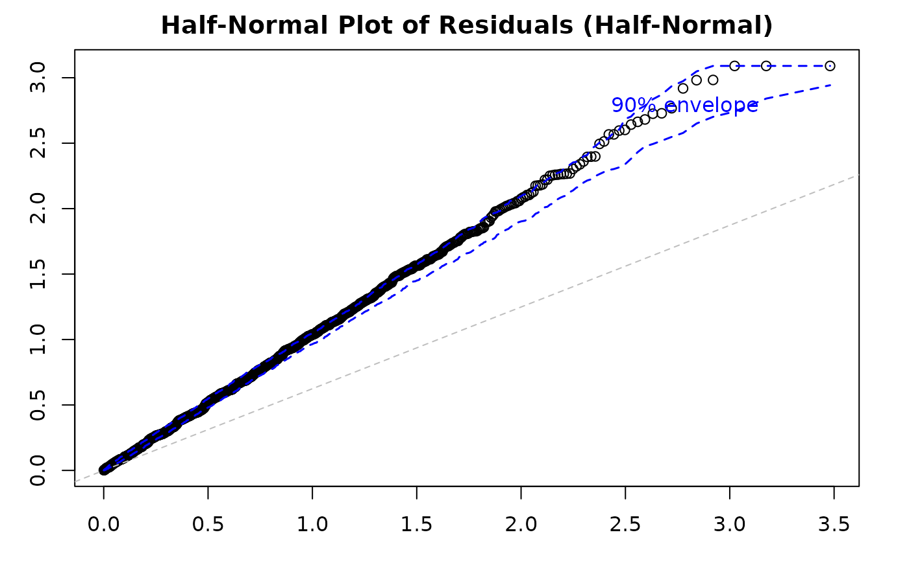

Diagnostic Plots for Generalized Kumaraswamy Regression Models
Source:R/gkwreg-plot.R
plot.gkwreg.RdProduces a comprehensive set of diagnostic plots for assessing the adequacy
of a fitted Generalized Kumaraswamy (GKw) regression model (objects of class
"gkwreg"). The function offers flexible plot selection, multiple
residual types, and support for both base R graphics and ggplot2 with
extensive customization options. Designed for thorough model evaluation
including residual analysis, influence diagnostics, and goodness-of-fit
assessment.
Usage
# S3 method for class 'gkwreg'
plot(
x,
which = 1:6,
type = c("quantile", "pearson", "deviance"),
family = NULL,
caption = NULL,
main = "",
sub.caption = "",
ask = NULL,
use_ggplot = FALSE,
arrange_plots = FALSE,
nsim = 100,
level = 0.9,
sample_size = NULL,
theme_fn = NULL,
save_diagnostics = FALSE,
...
)Arguments
- x
An object of class
"gkwreg", typically the result of a call togkwreg.- which
Integer vector specifying which diagnostic plots to produce. If a subset of the plots is required, specify a subset of the numbers 1:6. Defaults to
1:6(all plots). The plots correspond to:Residuals vs. Observation Indices: Checks for temporal patterns, trends, or autocorrelation in residuals across observation order.
Cook's Distance Plot: Identifies influential observations that have disproportionate impact on model estimates. Points exceeding the 4/n threshold warrant investigation.
Generalized Leverage vs. Fitted Values: Identifies high leverage points with unusual predictor combinations. Points exceeding 2p/n threshold may be influential.
Residuals vs. Linear Predictor: Checks for non-linearity in the predictor-response relationship and heteroscedasticity (non-constant variance).
Half-Normal Plot with Simulated Envelope: Assesses normality of residuals (particularly useful for quantile residuals) by comparing observed residuals against simulated quantiles. Points outside the envelope indicate potential model misspecification.
Predicted vs. Observed Values: Overall goodness-of-fit check showing model prediction accuracy and systematic bias.
- type
Character string indicating the type of residuals to be used for plotting. Defaults to
"quantile". Valid options are:"quantile": Randomized quantile residuals (Dunn & Smyth, 1996). Recommended for bounded responses as they should be approximately N(0,1) if the model is correctly specified. Most interpretable with standard diagnostic tools."pearson": Pearson residuals (response residual standardized by estimated standard deviation). Useful for checking the variance function and identifying heteroscedasticity patterns."deviance": Deviance residuals. Related to the log-likelihood contribution of each observation. Sum of squared deviance residuals equals the model deviance.
- family
Character string specifying the distribution family assumptions to use when calculating residuals and other diagnostics. If
NULL(default), the family stored within the fittedobjectis used. Specifying a different family can be useful for diagnostic comparisons across competing model specifications. Available options match those ingkwreg:"gkw","bkw","kkw","ekw","mc","kw","beta".- caption
Titles for the diagnostic plots. Can be specified in three ways:
NULL(default): Uses standard default captions for all plots.Character vector (backward compatibility): A vector of 6 strings corresponding to plots 1-6. Must provide all 6 titles even if only customizing some.
Named list (recommended): A list with plot numbers as names (e.g.,
list("3" = "My Custom Title")). Only specified plots are customized; others use defaults. This allows partial customization without repeating all titles.
Default captions are:
"Residuals vs. Observation Indices"
"Cook's Distance Plot"
"Generalized Leverage vs. Fitted Values"
"Residuals vs. Linear Predictor"
"Half-Normal Plot of Residuals"
"Predicted vs. Observed Values"
- main
Character string to be prepended to individual plot captions (from the
captionargument). Useful for adding a common prefix to all plot titles. Defaults to""(no prefix).- sub.caption
Character string used as a common subtitle positioned above all plots (especially when multiple plots are arranged). If
NULL(default), automatically generates a subtitle from the model call (deparse(x$call)). Set to""to suppress the subtitle entirely.- ask
Logical. If
TRUE(and using base R graphics with multiple plots on an interactive device), the user is prompted before displaying each plot. IfNULL(default), automatically determined:TRUEif more plots are requested than fit on the current screen layout and the session is interactive;FALSEotherwise. Explicitly set toFALSEto disable prompting orTRUEto force prompting.- use_ggplot
Logical. If
TRUE, plots are generated using theggplot2package, providing modern, publication-quality graphics with extensive theming capabilities. IfFALSE(default), uses base R graphics, which are faster and require no additional dependencies. Requires theggplot2package to be installed if set toTRUE.- arrange_plots
Logical. Only relevant if
use_ggplot = TRUEand multiple plots are requested (length(which) > 1). IfTRUE, attempts to arrange the generatedggplotobjects into a grid layout using either thegridExtraorggpubrpackage (requires one of them to be installed). IfFALSE(default), plots are displayed individually in sequence. Ignored when using base R graphics.- nsim
Integer. Number of simulations used to generate the confidence envelope in the half-normal plot (
which = 5). Higher values provide more accurate envelopes but increase computation time. Defaults to 100, which typically provides adequate precision. Must be a positive integer. Typical range: 50-500.- level
Numeric. The confidence level (between 0 and 1) for the simulated envelope in the half-normal plot (
which = 5). Defaults to 0.90 (90\ falling outside this envelope suggest potential model inadequacy or outliers.- sample_size
Integer or
NULL. If specified as an integer less than the total number of observations (x$nobs), a random sample of this size is used for calculating diagnostics and plotting. This can significantly speed up plot generation for very large datasets (n > 10,000) with minimal impact on diagnostic interpretation. Defaults toNULL(use all observations). Recommended values: 1000-5000 for large datasets.- theme_fn
A function. Only relevant if
use_ggplot = TRUE. Specifies aggplot2theme function to apply to all plots for consistent styling (e.g.,ggplot2::theme_bw,ggplot2::theme_classic,ggplot2::theme_minimal). IfNULL(default), automatically usesggplot2::theme_minimalwhenuse_ggplot = TRUE. Can also be a custom theme function. Ignored when using base R graphics.- save_diagnostics
Logical. If
TRUE, the function invisibly returns a list containing all calculated diagnostic measures (residuals, leverage, Cook's distance, fitted values, etc.) instead of the model object. Useful for programmatic access to diagnostic values for custom analysis or reporting. IfFALSE(default), the function invisibly returns the original model objectx. The function is primarily called for its side effect of generating plots.- ...
Additional graphical parameters passed to the underlying plotting functions. For base R graphics, these are standard
par()parameters such ascol,pch,cex,lwd, etc. For ggplot2, these are typically ignored but can be used for specific geom customizations in advanced usage. Always specified last to follow R best practices.
Value
Invisibly returns either:
The original fitted model object
x(ifsave_diagnostics = FALSE, the default). This allows piping or chaining operations.A list containing diagnostic measures (if
save_diagnostics = TRUE), including:data: Data frame with observation indices, observed values, fitted values, residuals, Cook's distance, leverage, and linear predictorsmodel_info: List with model metadata (n, p, thresholds, family, type, etc.)half_normal: Data frame with half-normal plot data and envelope (ifwhichincludes 5)
The function is primarily called for its side effect of generating diagnostic plots. The invisible return allows:
Details
Diagnostic plots are essential for evaluating the assumptions and adequacy of
fitted regression models. This function provides a comprehensive suite of
standard diagnostic tools adapted specifically for gkwreg objects,
which model bounded responses in the (0,1) interval.
Residual Types and Interpretation
The choice of residual type (type) is important and depends on the
diagnostic goal:
Quantile Residuals (
type = "quantile"): Recommended as default for bounded response models. These residuals are constructed to be approximately N(0,1) under a correctly specified model, making standard diagnostic tools (QQ-plots, hypothesis tests) directly applicable. They are particularly effective for detecting model misspecification in the distributional family or systematic bias.Pearson Residuals (
type = "pearson"): Standardized residuals that account for the mean-variance relationship. Useful for assessing whether the assumed variance function is appropriate. If plots show patterns or non-constant spread, this suggests the variance model may be misspecified.Deviance Residuals (
type = "deviance"): Based on the contribution of each observation to the model deviance. Often have more symmetric distributions than Pearson residuals and are useful for identifying observations that fit poorly according to the likelihood criterion.
Individual Plot Interpretations
Plot 1 - Residuals vs. Observation Indices:
Purpose: Detect temporal patterns or autocorrelation
What to look for: Random scatter around zero. Any systematic patterns (trends, cycles, clusters) suggest autocorrelation or omitted time-varying predictors.
Action: If patterns are detected, consider adding time-related predictors or modeling autocorrelation structure.
Plot 2 - Cook's Distance:
Purpose: Identify influential observations affecting coefficient estimates
What to look for: Points exceeding the 4/n reference line have high influence. These observations, if removed, would substantially change model estimates.
Action: Investigate high-influence points for data entry errors, outliers, or legitimately unusual cases. Consider sensitivity analysis.
Plot 3 - Leverage vs. Fitted Values:
Purpose: Identify observations with unusual predictor combinations
What to look for: Points exceeding the 2p/n reference line have high leverage. These are unusual in predictor space but may or may not be influential.
Action: High leverage points deserve scrutiny but are only problematic if they also have large residuals (check Plots 1, 4).
Plot 4 - Residuals vs. Linear Predictor:
Purpose: Detect non-linearity and heteroscedasticity
What to look for: Random scatter around zero with constant spread. Curved patterns suggest non-linear relationships. Funnel shapes indicate heteroscedasticity (non-constant variance).
Action: For non-linearity, add polynomial terms or use splines. For heteroscedasticity, consider alternative link functions or variance models.
Plot 5 - Half-Normal Plot with Envelope:
Purpose: Assess overall distributional adequacy
What to look for: Points should follow the reference line and stay within the simulated envelope. Systematic deviations indicate distributional misspecification. Isolated points outside the envelope suggest outliers.
Action: If many points fall outside the envelope, try a different distributional family or check for outliers and data quality issues.
Plot 6 - Predicted vs. Observed:
Purpose: Overall model fit and prediction accuracy
What to look for: Points should cluster around the 45-degree line. Systematic deviations above or below indicate over- or under-prediction. Large scatter indicates poor predictive performance.
Action: Poor fit suggests missing predictors, incorrect functional form, or inappropriate distributional family.
Using Caption Customization
The new named list interface for caption allows elegant partial
customization:
# OLD WAY (still supported): Must repeat all 6 titles
plot(model, caption = c(
"Residuals vs. Observation Indices",
"Cook's Distance Plot",
"MY CUSTOM TITLE FOR PLOT 3", # Only want to change this
"Residuals vs. Linear Predictor",
"Half-Normal Plot of Residuals",
"Predicted vs. Observed Values"
))
# NEW WAY: Specify only what changes
plot(model, caption = list(
"3" = "MY CUSTOM TITLE FOR PLOT 3"
))
# Plots 1,2,4,5,6 automatically use defaults
# Customize multiple plots
plot(model, caption = list(
"1" = "Time Series of Residuals",
"5" = "Distributional Assessment"
))The vector interface remains fully supported for backward compatibility.
NULL Defaults and Intelligent Behavior
Several arguments default to NULL, triggering intelligent automatic behavior:
sub.caption = NULL: Automatically generates subtitle from model callask = NULL: Automatically prompts only when needed (multiple plots on interactive device)theme_fn = NULL: Automatically usestheme_minimalwhenuse_ggplot = TRUE
You can override these by explicitly setting values:
Performance Considerations
For large datasets (n > 10,000):
Use
sample_sizeto work with a random subset (e.g.,sample_size = 2000)Reduce
nsimfor half-normal plot (e.g.,nsim = 50)Use base R graphics (
use_ggplot = FALSE) for faster renderingSkip computationally intensive plots:
which = c(1,2,4,6)(excludes half-normal plot)
Graphics Systems
Base R Graphics (use_ggplot = FALSE):
Faster rendering, especially for large datasets
No external dependencies beyond base R
Traditional R look and feel
Interactive
askprompting supportedCustomize via
...parameters (standardpar()settings)
ggplot2 Graphics (use_ggplot = TRUE):
Modern, publication-quality aesthetics
Consistent theming via
theme_fnGrid arrangement support via
arrange_plotsRequires
ggplot2package (and optionallygridExtraorggpubrfor arrangements)No interactive
askprompting (ggplot limitation)
References
Dunn, P. K., & Smyth, G. K. (1996). Randomized Quantile Residuals. Journal of Computational and Graphical Statistics, 5(3), 236-244. doi:10.1080/10618600.1996.10474708
Cook, R. D. (1977). Detection of Influential Observation in Linear Regression. Technometrics, 19(1), 15-18. doi:10.1080/00401706.1977.10489493
Atkinson, A. C. (1985). Plots, Transformations and Regression. Oxford University Press.
See also
gkwregfor fitting Generalized Kumaraswamy regression modelsresiduals.gkwregfor extracting different types of residualsfitted.gkwregfor extracting fitted valuessummary.gkwregfor model summariesplot.lmfor analogous diagnostics in linear modelsggplotfor ggplot2 graphics systemgrid.arrangefor arranging ggplot2 plots
Examples
# \donttest{
# EXAMPLE 1: Basic Usage with Default Settings
# Simulate data
library(gkwdist)
set.seed(123)
n <- 200
x1 <- runif(n, -2, 2)
x2 <- rnorm(n)
# True model parameters
alpha_true <- exp(0.7 + 0.3 * x1)
beta_true <- exp(1.2 - 0.2 * x2)
# Generate response
y <- rkw(n, alpha = alpha_true, beta = beta_true)
df <- data.frame(y = y, x1 = x1, x2 = x2)
# Fit model
model <- gkwreg(y ~ x1 | x2, data = df, family = "kw")
# Generate all diagnostic plots with defaults
par(mfrow = c(3, 2))
plot(model, ask = FALSE)
#> Simulating envelope ( 100 iterations): .......... Done!
# EXAMPLE 2: Selective Plots with Custom Residual Type
# Focus on key diagnostic plots only
par(mfrow = c(3, 1))
plot(model,
which = c(2, 4, 5), # Cook's distance, Resid vs LinPred, Half-normal
type = "pearson"
) # Use Pearson residuals
#> Simulating envelope ( 100 iterations): .......... Done!
# Check for influential points (plot 2) and non-linearity (plot 4)
par(mfrow = c(2, 1))
plot(model,
which = c(2, 4),
type = "deviance"
)
# EXAMPLE 3: Caption Customization - New Named List Interface
# Customize only specific plot titles (RECOMMENDED NEW WAY)
par(mfrow = c(3, 1))
plot(model,
which = c(1, 4, 6),
caption = list(
"1" = "Time Pattern Check",
"4" = "Linearity Assessment",
"6" = "Predictive Accuracy"
)
)
# Customize subtitle and main title
par(mfrow = c(2, 1))
plot(model,
which = c(1, 5),
main = "Model Diagnostics",
sub.caption = "Kumaraswamy Regression - Training Data",
caption = list("5" = "Normality Check with 95% Envelope")
)
#> Simulating envelope ( 100 iterations): .......... Done!

# Suppress subtitle entirely
par(mfrow = c(3, 2))
plot(model, sub.caption = "")
#> Simulating envelope ( 100 iterations): .......... Done!
# EXAMPLE 4: Backward Compatible Caption (Vector Interface)
# OLD WAY - still fully supported
par(mfrow = c(3, 2))
plot(model,
which = 1:6,
caption = c(
"Residual Pattern Analysis",
"Influence Diagnostics",
"Leverage Assessment",
"Linearity Check",
"Distributional Fit",
"Prediction Quality"
)
)
#> Simulating envelope ( 100 iterations): .......... Done!
# EXAMPLE 5: ggplot2 Graphics with Theming
# Modern publication-quality plots
plot(model,
use_ggplot = TRUE,
arrange_plots = TRUE
)
#> Simulating envelope ( 100 iterations): .......... Done!
# With custom theme
plot(model,
use_ggplot = TRUE,
theme_fn = ggplot2::theme_bw,
arrange_plots = TRUE
)
#> Simulating envelope ( 100 iterations): .......... Done!

# With classic theme and custom colors (via ...)
plot(model,
use_ggplot = TRUE,
theme_fn = ggplot2::theme_classic,
arrange_plots = TRUE
)
#> Simulating envelope ( 100 iterations): .......... Done!

# EXAMPLE 6: Arranged Multi-Panel ggplot2 Display
# Requires gridExtra or ggpubr package
plot(model,
which = 1:4,
use_ggplot = TRUE,
arrange_plots = TRUE, # Arrange in grid
theme_fn = ggplot2::theme_minimal
)

# Focus plots in 2x2 grid
plot(model,
which = c(2, 3, 4, 6),
use_ggplot = TRUE,
arrange_plots = TRUE,
caption = list(
"2" = "Influential Cases",
"3" = "High Leverage Points"
)
)

# EXAMPLE 7: Half-Normal Plot Customization
# Higher precision envelope (more simulations)
par(mfrow = c(1, 2))
plot(model,
which = 5,
nsim = 500, # More accurate envelope
level = 0.95
) # 95% confidence level
#> Simulating envelope ( 500 iterations): .......... Done!
# Quick envelope for large datasets
plot(model,
which = 5,
nsim = 500, # Faster computation
level = 0.90
)
#> Simulating envelope ( 500 iterations): .......... Done!
# EXAMPLE 8: Different Residual Types Comparison
# Compare different residual types
par(mfrow = c(2, 2))
plot(model, which = 4, type = "quantile", main = "Quantile")
plot(model, which = 4, type = "pearson", main = "Pearson")
plot(model, which = 4, type = "deviance", main = "Deviance")
par(mfrow = c(1, 1))
# Quantile residuals for half-normal plot (recommended)
plot(model, which = 5, type = "quantile")
#> Simulating envelope ( 100 iterations): .......... Done!

# EXAMPLE 9: Family Comparison Diagnostics
# Compare diagnostics under different distributional assumptions
# Helps assess if alternative family would fit better
par(mfrow = c(2, 2))
plot(model,
which = c(5, 6),
family = "kw", # Original family
main = "Kumaraswamy"
)
#> Simulating envelope ( 100 iterations): .......... Done!
plot(model,
which = c(5, 6),
family = "beta", # Alternative family
main = "Beta"
)
#> Using different family (beta) than what was used to fit the model (kw) for diagnostics.
#> Using different family (beta) than what was used to fit the model (kw). Recalculating fitted values...
#> Simulating envelope ( 100 iterations): .......... Done!
par(mfrow = c(1, 1))
# EXAMPLE 10: Large Dataset - Performance Optimization
# Simulate large dataset
set.seed(456)
n_large <- 50000
x1_large <- runif(n_large, -2, 2)
x2_large <- rnorm(n_large)
alpha_large <- exp(0.5 + 0.2 * x1_large)
beta_large <- exp(1.0 - 0.1 * x2_large)
y_large <- rkw(n_large, alpha = alpha_large, beta = beta_large)
df_large <- data.frame(y = y_large, x1 = x1_large, x2 = x2_large)
model_large <- gkwreg(y ~ x1 | x2, data = df_large, family = "kw")
# Optimized plotting for large dataset
par(mfrow = c(2, 2), mar = c(3, 3, 2, 2))
plot(model_large,
which = c(1, 2, 4, 6), # Skip computationally intensive plot 5
sample_size = 2000, # Use random sample of 2000 observations
ask = FALSE
) # Don't prompt
# If half-normal plot needed, reduce simulations
par(mfrow = c(1, 1))
plot(model_large,
which = 5,
sample_size = 1000, # Smaller sample
nsim = 50
) # Fewer simulations
#> Simulating envelope ( 50 iterations): .......... Done!

# EXAMPLE 11: Saving Diagnostic Data for Custom Analysis
# Extract diagnostic measures without plotting
par(mfrow = c(1, 1))
diag_data <- plot(model_large,
which = 1:6,
save_diagnostics = TRUE
)
#> Simulating envelope ( 100 iterations): .......... Done!
# Examine structure
str(diag_data)
#> List of 3
#> $ data :'data.frame': 50000 obs. of 8 variables:
#> ..$ index : int [1:50000] 1 2 3 4 5 6 7 8 9 10 ...
#> ..$ y_obs : num [1:50000] 0.185 0.272 0.771 0.135 0.833 ...
#> ..$ fitted : num [1:50000] 0.329 0.352 0.472 0.506 0.498 ...
#> ..$ resid : num [1:50000] -0.45 -0.196 1.363 -1.821 1.697 ...
#> ..$ abs_resid: num [1:50000] 0.45 0.196 1.363 1.821 1.697 ...
#> ..$ cook_dist: num [1:50000] 3.66e-04 6.51e-05 1.08e-02 3.33e-03 9.21e-03 ...
#> ..$ leverage : num [1:50000] 0.00716 0.00669 0.02227 0.00401 0.01253 ...
#> ..$ linpred : num [1:50000] 0.165 0.262 0.681 0.776 0.725 ...
#> $ model_info :List of 8
#> ..$ n : int 50000
#> ..$ p : num 4
#> ..$ cook_threshold : num 8e-05
#> ..$ leverage_threshold: num 0.00016
#> ..$ family : chr "kw"
#> ..$ type : chr "quantile"
#> ..$ param_info :List of 4
#> .. ..$ names : chr [1:2] "alpha" "beta"
#> .. ..$ n : num 2
#> .. ..$ fixed :List of 3
#> .. .. ..$ gamma : num 1
#> .. .. ..$ delta : num 0
#> .. .. ..$ lambda: num 1
#> .. ..$ positions:List of 2
#> .. .. ..$ alpha: num 1
#> .. .. ..$ beta : num 2
#> ..$ level : num 0.9
#> $ half_normal:'data.frame': 50000 obs. of 5 variables:
#> ..$ index : int [1:50000] 1 2 3 4 5 6 7 8 9 10 ...
#> ..$ theoretical: num [1:50000] 1.25e-05 3.76e-05 6.27e-05 8.77e-05 1.13e-04 ...
#> ..$ observed : num [1:50000] 3.04e-05 3.62e-05 7.93e-05 9.25e-05 1.07e-04 ...
#> ..$ lower : num [1:50000] 7.54e-07 8.56e-06 1.97e-05 3.05e-05 4.20e-05 ...
#> ..$ upper : num [1:50000] 6.62e-05 1.18e-04 1.43e-04 1.70e-04 2.02e-04 ...
# Access diagnostic measures
head(diag_data$data) # Residuals, Cook's distance, leverage, etc.
#> index y_obs fitted resid abs_resid cook_dist leverage
#> 1 1 0.1850315 0.3293218 -0.4500848 0.4500848 3.660713e-04 0.007162107
#> 2 2 0.2724554 0.3517257 -0.1964963 0.1964963 6.513023e-05 0.006691892
#> 3 3 0.7706749 0.4715884 1.3630349 1.3630349 1.076532e-02 0.022271859
#> 4 4 0.1350742 0.5059801 -1.8211089 1.8211089 3.331286e-03 0.004006455
#> 5 5 0.8325809 0.4979620 1.6974135 1.6974135 9.205032e-03 0.012525889
#> 6 6 0.4941673 0.3895391 0.5363847 0.5363847 8.755918e-04 0.011945865
#> linpred
#> 1 0.1652265
#> 2 0.2621458
#> 3 0.6807510
#> 4 0.7762421
#> 5 0.7251742
#> 6 0.3594552
# Identify influential observations
influential <- which(diag_data$data$cook_dist > diag_data$model_info$cook_threshold)
cat("Influential observations:", head(influential), "\n")
#> Influential observations: 1 3 4 5 6 7
# High leverage points
high_lev <- which(diag_data$data$leverage > diag_data$model_info$leverage_threshold)
cat("High leverage points:", head(high_lev), "\n")
#> High leverage points: 1 2 3 4 5 6
# Custom diagnostic plot using saved data
plot(diag_data$data$fitted, diag_data$data$resid,
xlab = "Fitted Values", ylab = "Residuals",
main = "Custom Diagnostic Plot",
col = ifelse(diag_data$data$cook_dist >
diag_data$model_info$cook_threshold, "red", "black"),
pch = 16
)
abline(h = 0, col = "gray", lty = 2)
legend("topright", legend = "Influential", col = "red", pch = 16)
# EXAMPLE 12: Interactive Plotting Control
# ask = TRUE Force prompting between plots (useful for presentations)
# Disable prompting (batch processing)
par(mfrow = c(3, 2))
plot(model,
which = 1:6,
ask = FALSE
) # Never prompts
#> Simulating envelope ( 100 iterations): .......... Done!
# EXAMPLE 13: Base R Graphics Customization via ...
# Customize point appearance
par(mfrow = c(2, 2))
plot(model,
which = c(1, 4, 6),
pch = 16, # Filled circles
col = "steelblue", # Blue points
cex = 0.8
) # Smaller points
# Multiple customizations
plot(model,
which = 2,
pch = 21, # Circles with border
col = "black", # Border color
bg = "lightblue", # Fill color
cex = 1.2, # Larger points
lwd = 2
) # Thicker lines
# EXAMPLE 14: Comparing Models
# Fit competing models
model_kw <- gkwreg(y ~ x1 | x2, data = df, family = "kw")
model_beta <- gkwreg(y ~ x1 | x2, data = df, family = "beta")
# Compare diagnostics side-by-side
par(mfrow = c(2, 2))
# Kumaraswamy model
plot(model_kw, which = 5, main = "Kumaraswamy - Half-Normal")
#> Simulating envelope ( 100 iterations): .......... Done!
plot(model_kw, which = 6, main = "Kumaraswamy - Pred vs Obs")
# Beta model
plot(model_beta, which = 5, main = "Beta - Half-Normal")
#> Simulating envelope ( 100 iterations): .......... Done!
plot(model_beta, which = 6, main = "Beta - Pred vs Obs")
par(mfrow = c(1, 1))
# }